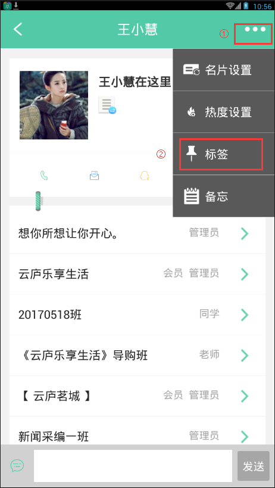
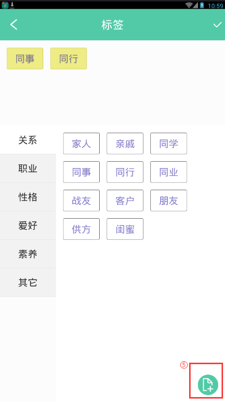
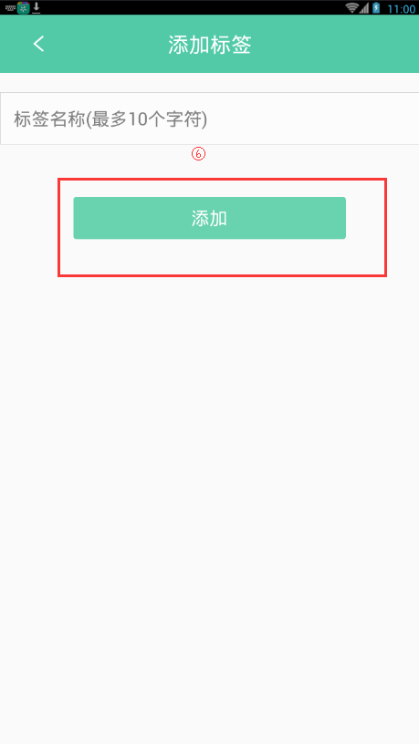
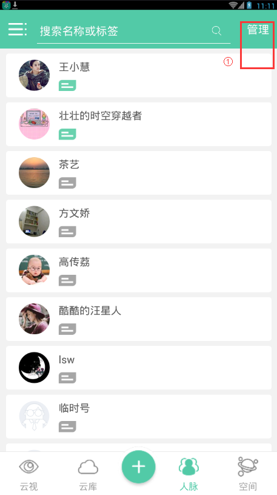
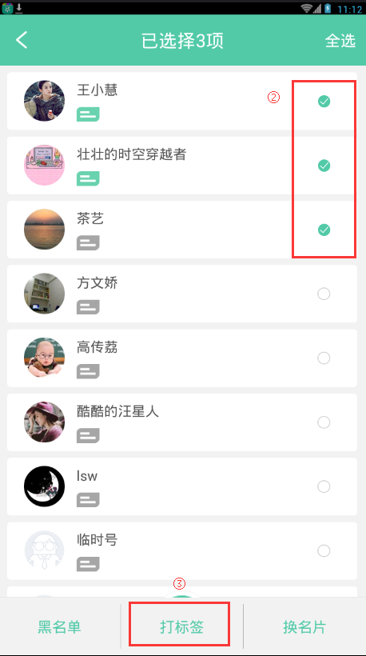

10. 如何给联系人添加标签？
1. 点击人脉列表中的联系人，进入到联系人详情页面。单击"..."->"标签"。
2.标签页面中，选择不同的标签分类，点击标签名"同事""朋友"等选择系统标签。
- 注：点击选择标签后系统会自动保存。
- 单击已选中的标签名可取消选中。
3. 或点击右下角的"+"，添加自定义标签。点击"添加"，添加成功。
 4. 联系人列表中长按联系人或右上角"管理"，启动批量打标签。
5.选择多个联系人后点击"打标签"，即可批量给联系人打标签。
